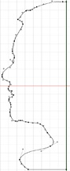

Rendering 3D Animations of The Continuous Profile®

After capturing the 2-D image of the human head in profile (see Project 1), the computer savvy user may want to create a 3-D rendering before committing to wood or clay. This will serve to work out any design flaws prior to committing to making a physical version out of wood or clay. However, the software products used to perform the renderings are often not available on your Mac or PC. Converting a 2-D profile picture in bitmap format to a vector path requires specialized software.
For those that have the animation software, this can be a fun and rewarding experience. The
resulting image of a Continuous Profile® can be posted to FaceBook or shared with friends via e-mail or printed documents.
There are many different products to perform the rendering, but the following is a high-level
description of how I have done it.
Using the advanced capability of PhotoShop, the background of the image is separated from the outline of the facial profile. The intent is to create a clearly defined detail of the facial features without human intervention, which can introduce errors into the pattern. There are several techniques available in PhotoShop for extracting a foreground object from the background. The computer application will separate the background from the foreground object.

Adobe Illustrator CS4 performs Raster to Vector conversion. Using the “Live Trace” function of Illustrator, the object is converted from a digital bitmap image to a scalable, mathematical representation of the image. A vector file is required to create the 3D animation in the next step of the process. The vector file will also be required as input to the AutoCAD program that will generate CNC code for the manufacture of The Continuous Profile™. A decided benefit is that vector files areconsiderably smaller than raster files, an important consideration when storing objects to a file system. Following is a screen image showing a vector representation of a facial profile. Rendering of the virtual avatar will provide the end user with a visual representation of what the manufactured Continuous Profile® will look like. The user can decide whether the rendered avatar is of any interest and elect to repeat the process, drop further interest, retain the avatar as electronic screen art, and/or continue with the creation of The Continuous Profile® resulting from the initial capture of the human head in profile. The Swift 3D product is used to convert a 2-D image to a 3-D picture and can animate it (make it rotate) so that the user can see the effect during 360-degrees of rotation.
Copyright © 2012 - 2014 The Continuous Profile LLC